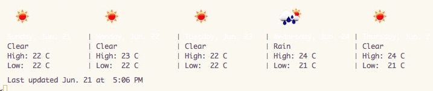
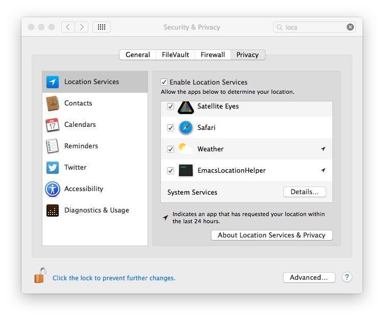

Geolocation contribution layer for Spacemacs
Table of ContentsClose
1 Description
This layer offers few location sensitive adjustment to Emacs, such as automatically switching between light (day) and dark (night) themes, weather forecast and on OS X, also automatic tracking of location, using OS X's CoreLocation services.
1.1 Supported packages in this layer
2 Install
To enable this contribution layer, add it to your =~/.spacemacs=~ like this:
(setq-default dotspacemacs-configuration-layers '(geolocation))
All services are disable by default. To enable all, or some of them, add instead something like this:
(geolocation :variables geolocation-enable-osx-location-service-support t geolocation-enable-weather-forecast t geolocation-enable-automatic-theme-changer t)
3 Configuration
3.1 Location
To set location manually, add something like this inside the dotspacemacs/config
defun.
(setq calendar-location-name "Barcelona, Spain" calendar-latitude 41.23 calendar-longitude 1.80)
On OS X, all of these variables get setup automatically by the osx-location
service, when enabled. If calendar-location-name was omitted, it'll be
stringed-up like so: "41.23, 1.80".
3.2 theme-changer
Theme changer will switch between the first two themes the user has setup in
dotspacemacs-themes, depending on time at geographical location.
3.3 sunshine (weather forecast)
Sunshine uses the imperial unit system by default. To switch to metric, do this:
(setq sunshine-units 'metric)
Weather forecast icons are disabled by default, but can be toggled by pressing `i' within this mode's main buffer. To display weather forecast icons by default ("pretty mode"), change the settings to this:
(setq sunshine-show-icons t)

3.4 osx-location
OS X users can take adavantage of automatic geogrphical discovery using the OS' CoreLocation system service, implemented as a long running background process. A helper script will need to be given proper access first time this layer is activated.

4 Key Bindings
4.1 Weather
| Evil | Holy | Command |
|---|---|---|
SPC a w |
Display pretty weather forecast | |
SPC a W |
Display quick weather forecast in mini buffer |